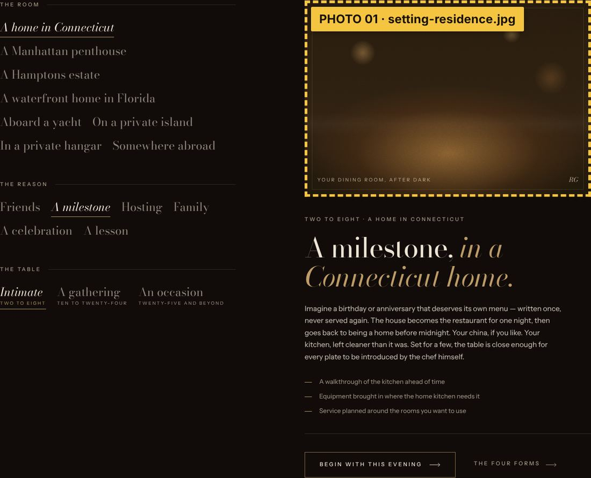

EssentialCaption on site: “Your dining room, after dark”
A home in Connecticut
setting-residence.jpgpublic/images/possibilities/setting-residence.jpg

The first room a visitor sees in “Compose an evening”. It is the default view, so it shows up on the home page before anyone clicks.
What to capture
A real Connecticut dining room at night, set for a private dinner, photographed from the doorway at standing height. It should feel like a home, not a hotel.
In the frame
- Polished wood table for about eight, dressed in ivory linen.
- Lit candles in aged-brass holders down the middle; wine already poured.
- Classic New England room: painted wood paneling, a dark window, a brass chandelier dimmed low.
- Through an open door on the right: a slice of warm kitchen light with a figure working at the stove, out of focus.
- Lived-in details in shadow: books on a sideboard, a framed painting.
Light & color
Candles and the dimmed chandelier only. Warm amber on the table, deep brown shadow in the corners.
Avoid
Bright overhead light, flash, guests' faces, anything that identifies the homeowner.
What's needed
A real dining room in Connecticut; table linen, candles, glassware. Chef Ray optional (as the blurred figure in the kitchen).
Table + candlesKitchen glowCaption: keep simple